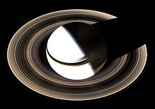
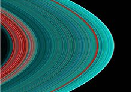

Rings

The Rings of Saturn
(imaged here by Cassini in 2007) are the most massive and conspicuous in the Solar System.
- Diameter (km)
- 22.2 km
- Mass (kg)
- 2×1015 km
- Orbital period
- 30.35 h

Saturns Ring's Up Close
False-color UV image of Saturn's outer B and A rings; dirtier ringlets in the Cassini Division and Enke Gap show up red.
- Diameter (km)
- 12.6 km
- Mass (kg)
- 10.8×1015 km
- Orbital period
- 7.66 h